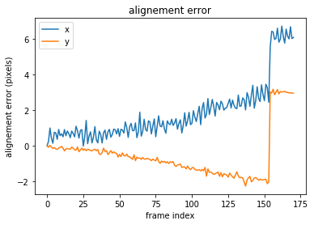
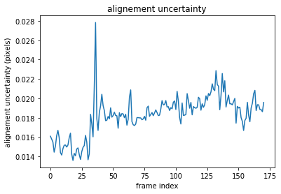

Science cube reduction process¶
jobfile:
WAVENUMBER 1
WAVE_CALIB 1
APOD 1.0
INIT_ANGLE 2.1
INIT_DY 8.6
INIT_DX 1.8
CALIBMAP /reductions2/sitelle/M95/SN1/laser/LASER_None.cam1.calibration_laser_map.fit.fits
STDPATH /reductions2/sitelle/M95/SN1/standard/LDS749B_SN1.merged.standard_spectrum.hdf5
OBS data/ar42/19ap41/2397792o.fits
OBS data/ar42/19ap41/2397793o.fits
OBS data/ar42/19ap41/2397794o.fits
OBS data/ar42/19ap41/2397795o.fits
OBS data/ar42/19ap41/2397796o.fits
OBS data/ar42/19ap41/2397797o.fits
OBS data/ar42/19ap41/2397798o.fits
OBS data/ar42/19ap41/2397799o.fits
OBS data/ar42/19ap41/2397800o.fits
OBS data/ar42/19ap41/2397801o.fits
OBS data/ar42/19ap41/2397802o.fits
OBS data/ar42/19ap41/2397803o.fits
OBS data/ar42/19ap41/2397804o.fits
OBS data/ar42/19ap41/2397805o.fits
OBS data/ar42/19ap41/2397806o.fits
OBS data/ar42/19ap41/2397807o.fits
OBS data/ar42/19ap41/2397808o.fits
OBS data/ar42/19ap41/2397809o.fits
OBS data/ar42/19ap41/2397810o.fits
OBS data/ar42/19ap41/2397811o.fits
command:
orbs sitelle science.job start
The complete reduction pass for the science data reduction can be obtained with the command
orbs sitelle science.job status
Status of roadmap for sitelle object full
0 - compute_alignment_vector 1: done
1 - compute_alignment_vector 2: done
2 - compute_cosmic_ray_maps 0: done
3 - compute_interferogram 1: done
4 - compute_interferogram 2: done
5 - transform_cube_B 0: done
6 - merge_interferograms 0: done
7 - compute_phase_maps 0: done
8 - compute_spectrum 0: done
9 - calibrate_spectrum 0: done
generating a report¶
At any moment during the reduction process a report can be generated. It will try to gather all the most important outputs and produce a pdf file.
orbs sitelle science.job report
checking by hand¶
When things go really wrong you may want to check the outputs with more precision than the generated pdf report. We will introduce some of the major handlers in the subsequent sections.
alignment vectors¶
alignement vectors are used to align the frames within each interferometric cube (2 cameras = 2 interferometric cubes)
[8]:
import orb.utils.io
import pylab as pl
align1 = orb.utils.io.read_fits('/reductions2/sitelle/M95/SN1/science/M95_SN1/CAM1/M95_SN1.cam1.RawData.alignment_vector.fits')
pl.plot(align1[:,0], label='x')
pl.plot(align1[:,1], label='y')
pl.ylabel('alignement error (pixels)')
pl.xlabel('frame index')
pl.legend()
pl.title('alignement error')
pl.figure()
align1_err = orb.utils.io.read_fits('/reductions2/sitelle/M95/SN1/science/M95_SN1/CAM1/M95_SN1.cam1.RawData.alignment_vector_err.fits')
pl.plot(align1_err)
pl.ylabel('alignement uncertainty (pixels)')
pl.xlabel('frame index')
pl.title('alignement uncertainty')
[8]:
Text(0.5, 1.0, 'alignement uncertainty')


[ ]:
##